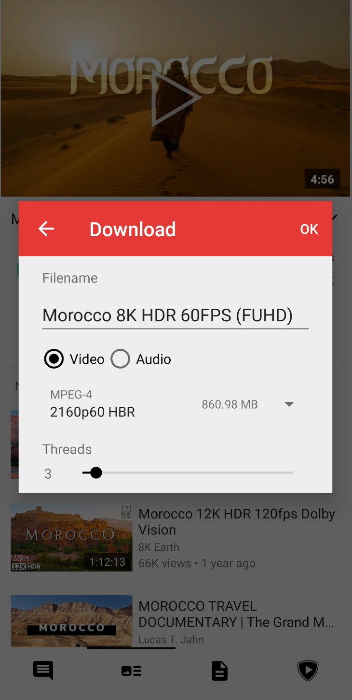

PipePipe 入门：把 YouTube 视频存进手机的最简单方法
PipePipe 是一个帮你下载 YouTube 视频、订阅频道、管理本地视频库的 Android 应用。这篇文章从零带你上手，五分钟跑通第一次下载，再聊聊新手最容易踩的三个坑。
这篇能带你从完全不懂到用起来——不需要任何基础，跟着做就行。
PipePipe官网 是什么？想象你手机里有个"视频收纳盒"：你在 YouTube 刷到什么好内容，随手丢进盒子里，它帮你存好、分类、随时再看。这个收纳盒还不止存视频——能抽音频当播客存、能订频道自动更新、能批量下整个播放列表。核心就一件事：把你在 YouTube 上喜欢的内容，变成你手机本地随时能看的东西。
五分钟上手：从安装到第一次下载
第一步当然是拿到安装包。打开浏览器去 PipePipe 的官方下载拿 APK 文件，装完就能用。第一次启动会问你要不要给通知权限，建议开着——订阅频道更新时它会提醒你。

第二步，搜索你想下的视频。主界面顶部有个搜索框，直接输关键词或者粘贴 YouTube 链接都行。搜到了点开详情页，底部有个 Download 按钮。
点 Download 会弹出下载对话框，这是 PipePipe 最核心的界面——四个字段看懂就能开工：
- Filename：默认取视频标题，嫌长可以自己改；
- Video / Audio 单选：下完整视频，还是只抽音频流（当播客音乐存）。音频流的体积小一个量级，想省空间直接选 Audio；
- 格式档位：列出当前视频可用的具体格式和预估体积，比如 MPEG-4 2160p60 约 861 MB。档位多少取决于平台给这个视频提供了什么；
- Threads（线程数）：下载并发数，滑杆可调。线程多拉得快，但太高可能被服务端限速，一般 3 左右够用。

选好格式、调好线程数，点右下角的下载按钮就开始了。下载进度能在应用的 Downloads 页面实时看到，完成后视频会自动出现在你设置的下载目录里。就这么简单——五分钟搞定第一次。
上手后先玩这三个功能
下载只是起点，PipePipe 真正好用的地方在后面这三个功能，新手最值得先碰。
第一个：订阅频道，自动收更新
你在 YouTube 上关注了几十个频道，每个都想第一时间看到新视频？PipePipe 的订阅功能就是为此设计的。在详情页点频道名进入频道主页，顶部有个 Subscribe 按钮，点一下就订阅了。以后这个频道有新视频，PipePipe 会自动拉取、通知你。
如果你原来在 YouTube 已经攒了一堆订阅，不想一个一个手动加，还有个省事的办法——从 Google Takeout 导入。Google 官方的 Takeout 服务能把你账号的订阅列表导成一个 CSV 文件，PipePipe 直接读这个文件就能批量导入全部订阅，不用在应用里登录 YouTube 账号。导入在后台跑，完成后订阅就会出现在列表里——导入失败的排查步骤在 PipePipe文档 里写得更细。
第二个：下载音频当播客存
看到一个超长的技术讲座，但不想盯着屏幕看？或者想把音乐视频变成纯音频存起来？Download 对话框里选 Audio 单选就行。
音频下载的体积比视频小一个量级——一个 2 小时的视频，抽成音频可能才 100MB 左右，省空间又方便随身听。唯一要注意的是：音频下载没有封面图是功能现状，不是 bug，别担心。
第三个：批量下整个播放列表
想一次性把一个频道的历史视频全下下来？或者把一个播放列表整个存到本地？PipePipe 支持批量下载。进入频道主页或播放列表页，点右上角菜单，选 Download all，它会自动把列表里的每个视频都加入下载队列，后台一个个跑完。
批量下载前最好先看看存储空间够不够——4K 视频动辄几个 GB，几十个一起下的话先确认一下内部存储和目标目录都有余量。
小白的三个常见疑问
疑问一：明明选了 SD 卡，为什么说空间不足？
这是下载问题里最经典的误会。根源是下载其实经过两个地方：最终文件去你设置的目录，但下载过程中的临时文件用的是应用内部存储。两边任何一边满了，下载都会失败。
所以选了 SD 卡不代表压力都在 SD 卡上，临时文件照样占内部存储。空间检查要看两处——内部存储余量 + 目标位置余量。下载大体积视频时尤其要注意。
建议是：大文件下载优先选内部存储，稳定性最好；SD 卡作为中转再手动搬，比直接写 SD 卡靠谱。
疑问二：只有个别视频放不出来，怎么回事？
"别的都能放，就这一个不行"和"全都放不了"是两棵完全不同的排查树。前者先从内容本身查起——别一上来就重装应用、改 DNS，那些是全局失败的动作。
按这个顺序排查：
- 先把视频地址在普通浏览器里也开一次，确认它本身可看。是不是直播？是不是 Shorts？是不是年龄限制、会员专属或已下架？受限内容的处理方向不同，下架内容谁都救不了。
- 升级到最新稳定版后，原样重试同一个地址一次。
- 记下当前提取端点，仍失败就只改一个变量（画质、编码、网络或登录态其中之一）再试同一个地址。每次结果都记下来——"同视频、单改动"的对比才有价值。
- 按报错归类：带视频解码器字样可能是编码问题，带 UnknownHost 可能是 DNS 过滤，提示机器人验证那就是被反爬了。
疑问三：下载到一半失败了怎么办？
下载失败先确认三件事：内部存储剩多少、目标位置剩多少、失败发生在哪个阶段（还没开始 / 传输中 / 合并中 / 移动到最终目录时）。这个自查清单能帮你快速定位问题。
如果是网络波动导致的，直接重试就行——PipePipe 支持断点续传，不会从头再来。如果反复失败，可以查一下对应的错误码，上面有详细的处理步骤。
能看到这里，你应该已经能用 PipePipe 下载第一个视频了。接下来想深入的话，推荐去它的文档站翻翻——高级格式开关、提取端点切换、订阅分组管理这些进阶玩法都写得很清楚。这套 PipePipe 的完整资料我同步放在了三个代码仓库，国内访问选 Gitee 或 GitCode 更快，GitHub 那边作为备份也一直保持更新。祝你玩得开心。